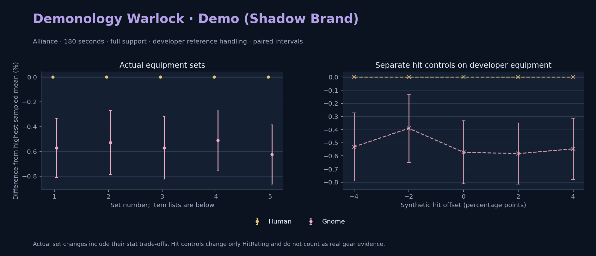

Alliance · Human / Gnome

Pets / guardians: Imp, Voidwalker, Succubus, Felhunter · 132.1 DPS (18.0% of total). Reference: Human, developer equipment, 180 seconds and full support. Pet choices remain those of the developer build.
WoWSims developer · Pre-raid (baseline fallback)
Unimplemented item effects: [{"id": 14153, "name": "Robe of the Void", "effects": ["Heal your pet for 600."]}]
Unimplemented enchant or active set effects: [{"id": 183, "pieces": 4, "effects": ["When struck in combat has a 2% chance of causing the attacker to flee in terror for 2s. Can only occur once every 60 sec."]}]
180 seconds, full support and original developer references. Hit below is generic sheet melee / spell hit; school and talent bonuses can be attached directly to spells.
| Race | DPS | Gap and interval | Generic hit | Replay |
|---|---|---|---|---|
| Human | 734.60 | +0.000% ± 0.000 | 3.0% / 3.0% | Native input · Website JSON |
| Gnome | 730.39 | -0.573% ± 0.239 | 3.0% / 3.0% | Native input · Website JSON |
| Slot | Item | ID | Enchant |
|---|---|---|---|
| Head | Dreadmist Mask | 16698 | |
| Neck | Beads of Ogre Mojo | 22149 | |
| Shoulder | Dreadmist Mantle | 16701 | |
| Back | Arcanoweave Cloak | 272411 | |
| Chest | Robe of the Void | 14153 | |
| Wrist | Dreadmist Bracers | 16703 | |
| Hands | Dreadmist Wraps | 16705 | |
| Waist | Dreadmist Belt | 16702 | |
| Legs | Dreadmist Leggings | 16699 | |
| Feet | Dreadmist Sandals | 16704 | |
| Ring 1 | Jereman's Bauble | 275738 | |
| Ring 2 | Advisor's Ring | 19518 | |
| Trinket 1 | Weakness Analyzer | 272438 | |
| Trinket 2 | Jewel of the Guard Captain | 270225 | |
| Main hand | Clever Expeditionary's Spellblade | 271928 | |
| Off hand | Truesilver Conduit | 249455 | |
| Ranged / relic | Lunar Wand | 15283 |
Published ranked alternatives · Published pre-raid
Recorded source replacements: [{"slot": "feet", "from": 11822, "to": 275606, "publishedAlternativeRank": 1, "publishedEpDelta": -0.2, "reason": "First published alternative compatible with the current WoWSims database, class, faction and occupied slots."}]
180 seconds, full support and original developer references. Hit below is generic sheet melee / spell hit; school and talent bonuses can be attached directly to spells.
| Race | DPS | Gap and interval | Generic hit | Replay |
|---|---|---|---|---|
| Human | 844.02 | +0.000% ± 0.000 | 4.0% / 4.0% | Native input · Website JSON |
| Gnome | 839.56 | -0.528% ± 0.256 | 4.0% / 4.0% | Native input · Website JSON |
| Slot | Item | ID | Enchant |
|---|---|---|---|
| Head | Dreamweave Circlet | 10041 | Arcanum of Focus |
| Neck | Archlight Talisman | 15856 | Enchant Necklace - Spell Power |
| Shoulder | Mantle of the Timbermaw | 19050 | |
| Back | Arcanoweave Cloak | 272411 | |
| Chest | Robe of Winter Night | 14136 | Mystic Rugged Armor Kit |
| Wrist | Runecloth Cuffs | 254123 | Enchant Bracer - Greater Spellpower |
| Hands | Gloves of Spell Mastery | 14146 | Enchant Gloves - Minor Haste |
| Waist | Belt of the Archmage | 18405 | |
| Legs | Ghostweave Pants | 14144 | Arcanum of Focus |
| Feet | Venomspew Footpads | 275606 | Mystic Rugged Armor Kit |
| Ring 1 | Blessed Band of Light | 272407 | |
| Ring 2 | Maiden's Circle | 13001 | |
| Trinket 1 | Weakness Analyzer | 272438 | |
| Trinket 2 | Uther's Strength | 11302 | |
| Main hand | Sageblade | 22383 | |
| Off hand | Spirit of Aquementas | 11904 | Enchant Off-Hand - Superior Intellect |
| Ranged / relic | Greater Eternal Wand | 249237 |
Published one-slot hit alternative · Published pre-raid
One source-listed alternative; at least 80% of the source slot score retained. Reported hit selects the contrast; only native stats determine simulation outcomes. This is an experimental combination, not an endorsed best set.
Recorded source replacements: [{"slot": "feet", "from": 11822, "to": 275606, "publishedAlternativeRank": 1, "publishedEpDelta": -0.2, "reason": "First published alternative compatible with the current WoWSims database, class, faction and occupied slots."}]
180 seconds, full support and original developer references. Hit below is generic sheet melee / spell hit; school and talent bonuses can be attached directly to spells.
| Race | DPS | Gap and interval | Generic hit | Replay |
|---|---|---|---|---|
| Human | 843.84 | +0.000% ± 0.000 | 5.0% / 5.0% | Native input · Website JSON |
| Gnome | 839.02 | -0.571% ± 0.254 | 5.0% / 5.0% | Native input · Website JSON |
| Slot | Item | ID | Enchant |
|---|---|---|---|
| Head | Dreamweave Circlet | 10041 | Arcanum of Focus |
| Neck | Archlight Talisman | 15856 | Enchant Necklace - Spell Power |
| Shoulder | Mantle of the Timbermaw | 19050 | |
| Back | Arcanoweave Cloak | 272411 | |
| Chest | Robe of Winter Night | 14136 | Mystic Rugged Armor Kit |
| Wrist | Runecloth Cuffs | 254123 | Enchant Bracer - Greater Spellpower |
| Hands | Gloves of Spell Mastery | 14146 | Enchant Gloves - Minor Haste |
| Waist | Belt of the Archmage | 18405 | |
| Legs | Ghostweave Pants | 14144 | Arcanum of Focus |
| Feet | Venomspew Footpads | 275606 | Mystic Rugged Armor Kit |
| Ring 1 | Blessed Band of Light | 272407 | |
| Ring 2 | Channeler's Ring | 272406 | |
| Trinket 1 | Weakness Analyzer | 272438 | |
| Trinket 2 | Uther's Strength | 11302 | |
| Main hand | Sageblade | 22383 | |
| Off hand | Spirit of Aquementas | 11904 | Enchant Off-Hand - Superior Intellect |
| Ranged / relic | Greater Eternal Wand | 249237 |
Published ranked alternatives · Published pre-raid
Recorded source replacements: [{"slot": "shoulder", "from": 227808, "to": 19050, "publishedAlternativeRank": 1, "publishedEpDelta": -10.6, "reason": "First published alternative compatible with the current WoWSims database, class, faction and occupied slots."}, {"slot": "waist", "from": 228190, "to": 18405, "publishedAlternativeRank": 1, "publishedEpDelta": -10.4, "reason": "First published alternative compatible with the current WoWSims database, class, faction and occupied slots."}, {"slot": "feet", "from": 11822, "to": 275606, "publishedAlternativeRank": 1, "publishedEpDelta": -0.2, "reason": "First published alternative compatible with the current WoWSims database, class, faction and occupied slots."}]
Unimplemented item effects: [{"id": 14153, "name": "Robe of the Void", "effects": ["Heal your pet for 600."]}]
180 seconds, full support and original developer references. Hit below is generic sheet melee / spell hit; school and talent bonuses can be attached directly to spells.
| Race | DPS | Gap and interval | Generic hit | Replay |
|---|---|---|---|---|
| Human | 861.21 | +0.000% ± 0.000 | 4.9% / 4.9% | Native input · Website JSON |
| Gnome | 856.80 | -0.512% ± 0.247 | 4.9% / 4.9% | Native input · Website JSON |
| Slot | Item | ID | Enchant |
|---|---|---|---|
| Head | Dreamweave Circlet | 10041 | Arcanum of Focus |
| Neck | Archlight Talisman | 15856 | Enchant Necklace - Spell Power |
| Shoulder | Mantle of the Timbermaw | 19050 | |
| Back | Arcanoweave Cloak | 272411 | |
| Chest | Robe of the Void | 14153 | Mystic Rugged Armor Kit |
| Wrist | Runecloth Cuffs | 254123 | Enchant Bracer - Greater Spellpower |
| Hands | Gloves of Spell Mastery | 14146 | Enchant Gloves - Minor Haste |
| Waist | Belt of the Archmage | 18405 | |
| Legs | Ghostweave Pants | 14144 | Arcanum of Focus |
| Feet | Venomspew Footpads | 275606 | Mystic Rugged Armor Kit |
| Ring 1 | Blessed Band of Light | 272407 | |
| Ring 2 | Maiden's Circle | 13001 | |
| Trinket 1 | Weakness Analyzer | 272438 | |
| Trinket 2 | Frozen Heart of the Mountain | 249469 | |
| Main hand | Sageblade | 22383 | |
| Off hand | Spirit of Aquementas | 11904 | Enchant Off-Hand - Superior Intellect |
| Ranged / relic | Brilliant Wand | 249385 |
Published one-slot hit alternative · Published pre-raid
One source-listed alternative; at least 80% of the source slot score retained. Reported hit selects the contrast; only native stats determine simulation outcomes. This is an experimental combination, not an endorsed best set.
Recorded source replacements: [{"slot": "shoulder", "from": 227808, "to": 19050, "publishedAlternativeRank": 1, "publishedEpDelta": -10.6, "reason": "First published alternative compatible with the current WoWSims database, class, faction and occupied slots."}, {"slot": "waist", "from": 228190, "to": 18405, "publishedAlternativeRank": 1, "publishedEpDelta": -10.4, "reason": "First published alternative compatible with the current WoWSims database, class, faction and occupied slots."}, {"slot": "feet", "from": 11822, "to": 275606, "publishedAlternativeRank": 1, "publishedEpDelta": -0.2, "reason": "First published alternative compatible with the current WoWSims database, class, faction and occupied slots."}]
Unimplemented item effects: [{"id": 14153, "name": "Robe of the Void", "effects": ["Heal your pet for 600."]}]
180 seconds, full support and original developer references. Hit below is generic sheet melee / spell hit; school and talent bonuses can be attached directly to spells.
| Race | DPS | Gap and interval | Generic hit | Replay |
|---|---|---|---|---|
| Human | 859.54 | +0.000% ± 0.000 | 5.9% / 5.9% | Native input · Website JSON |
| Gnome | 854.16 | -0.625% ± 0.239 | 5.9% / 5.9% | Native input · Website JSON |
| Slot | Item | ID | Enchant |
|---|---|---|---|
| Head | Dreamweave Circlet | 10041 | Arcanum of Focus |
| Neck | Archlight Talisman | 15856 | Enchant Necklace - Spell Power |
| Shoulder | Mantle of the Timbermaw | 19050 | |
| Back | Arcanoweave Cloak | 272411 | |
| Chest | Robe of the Void | 14153 | Mystic Rugged Armor Kit |
| Wrist | Runecloth Cuffs | 254123 | Enchant Bracer - Greater Spellpower |
| Hands | Gloves of Spell Mastery | 14146 | Enchant Gloves - Minor Haste |
| Waist | Belt of the Archmage | 18405 | |
| Legs | Ghostweave Pants | 14144 | Arcanum of Focus |
| Feet | Venomspew Footpads | 275606 | Mystic Rugged Armor Kit |
| Ring 1 | Blessed Band of Light | 272407 | |
| Ring 2 | Channeler's Ring | 272406 | |
| Trinket 1 | Weakness Analyzer | 272438 | |
| Trinket 2 | Frozen Heart of the Mountain | 249469 | |
| Main hand | Sageblade | 22383 | |
| Off hand | Spirit of Aquementas | 11904 | Enchant Off-Hand - Superior Intellect |
| Ranged / relic | Brilliant Wand | 249385 |
The same declared pool is available to every race. Each race keeps its best validation-sample set with its screening-selected racial policy. Separate samples confirm that choice, with fresh precision samples near the practical-loss boundary. Gaps use the highest sampled mean under that same duration, support and reference treatment as their reference. A zero reference gap does not certify a race; the main matrix also allows uncertainty in the leader.
| Pool | Seconds | Support | References | Race | DPS | Gap and interval | Racial policies / mana | Selected set | Generic hit: melee / spell | Replay |
|---|---|---|---|---|---|---|---|---|---|---|
| published-pre-raid | 60 | full | developer | Human | 891.57 | +0.000% ± 0.0005,000 iterations | developer / developer / developerMana waits 0.0s | published-warlock-demonology-shadow-alliance-29be03925d0673f8 | 4.9% / 4.9% | Input · Result · Stats |
| published-pre-raid | 60 | full | developer | Gnome | 884.95 | -0.742% ± 0.0475,000 iterations | developer / developer / developerMana waits 0.0s | published-warlock-demonology-shadow-alliance-29be03925d0673f8 | 4.9% / 4.9% | Input · Result · Stats |
| published-pre-raid | 60 | full | explicit | Human | 891.57 | +0.000% ± 0.0005,000 iterations | developer / developer / developerMana waits 0.0s | published-warlock-demonology-shadow-alliance-29be03925d0673f8 | 4.9% / 4.9% | Input · Result · Stats |
| published-pre-raid | 60 | full | explicit | Gnome | 884.95 | -0.742% ± 0.0475,000 iterations | developer / developer / developerMana waits 0.0s | published-warlock-demonology-shadow-alliance-29be03925d0673f8 | 4.9% / 4.9% | Input · Result · Stats |
| published-pre-raid | 60 | self | developer | Gnome | 807.37 | +0.000% ± 0.00020,000 iterations | developer / developer / developerMana waits 0.1s | published-warlock-demonology-shadow-alliance-29be03925d0673f8-higher-hit | 5.9% / 5.9% | Input · Result · Stats |
| published-pre-raid | 60 | self | developer | Human | 805.89 | -0.184% ± 0.07920,000 iterations | developer / developer / developerMana waits 0.2s | published-warlock-demonology-shadow-alliance-29be03925d0673f8 | 4.9% / 4.9% | Input · Result · Stats |
| published-pre-raid | 60 | self | explicit | Gnome | 807.37 | +0.000% ± 0.00020,000 iterations | developer / developer / developerMana waits 0.1s | published-warlock-demonology-shadow-alliance-29be03925d0673f8-higher-hit | 5.9% / 5.9% | Input · Result · Stats |
| published-pre-raid | 60 | self | explicit | Human | 805.89 | -0.184% ± 0.07920,000 iterations | developer / developer / developerMana waits 0.2s | published-warlock-demonology-shadow-alliance-29be03925d0673f8 | 4.9% / 4.9% | Input · Result · Stats |
| published-pre-raid | 180 | full | developer | Human | 860.47 | +0.000% ± 0.0005,000 iterations | developer / developer / developerMana waits 0.1s | published-warlock-demonology-shadow-alliance-29be03925d0673f8 | 4.9% / 4.9% | Input · Result · Stats · Website JSON |
| published-pre-raid | 180 | full | developer | Gnome | 856.43 | -0.470% ± 0.1155,000 iterations | oncd / developer / developerMana waits 0.1s | published-warlock-demonology-shadow-alliance-29be03925d0673f8 | 4.9% / 4.9% | Input · Result · Stats · Website JSON |
| published-pre-raid | 180 | full | explicit | Human | 860.47 | +0.000% ± 0.0005,000 iterations | developer / developer / developerMana waits 0.1s | published-warlock-demonology-shadow-alliance-29be03925d0673f8 | 4.9% / 4.9% | Input · Result · Stats |
| published-pre-raid | 180 | full | explicit | Gnome | 856.43 | -0.470% ± 0.1155,000 iterations | oncd / developer / developerMana waits 0.1s | published-warlock-demonology-shadow-alliance-29be03925d0673f8 | 4.9% / 4.9% | Input · Result · Stats |
| published-pre-raid | 180 | self | developer | Human | 764.16 | +0.000% ± 0.0005,000 iterations | developer / developer / developerMana waits 0.6s | published-warlock-demonology-shadow-alliance-29be03925d0673f8 | 4.9% / 4.9% | Input · Result · Stats |
| published-pre-raid | 180 | self | developer | Gnome | 759.39 | -0.624% ± 0.1095,000 iterations | oncd / developer / developerMana waits 0.6s | published-warlock-demonology-shadow-alliance-29be03925d0673f8 | 4.9% / 4.9% | Input · Result · Stats |
| published-pre-raid | 180 | self | explicit | Human | 764.16 | +0.000% ± 0.0005,000 iterations | developer / developer / developerMana waits 0.6s | published-warlock-demonology-shadow-alliance-29be03925d0673f8 | 4.9% / 4.9% | Input · Result · Stats |
| published-pre-raid | 180 | self | explicit | Gnome | 759.39 | -0.624% ± 0.1095,000 iterations | oncd / developer / developerMana waits 0.6s | published-warlock-demonology-shadow-alliance-29be03925d0673f8 | 4.9% / 4.9% | Input · Result · Stats |
| published-pre-raid | 300 | full | developer | Human | 850.81 | +0.000% ± 0.0005,000 iterations | developer / developer / developerMana waits 0.1s | published-warlock-demonology-shadow-alliance-29be03925d0673f8 | 4.9% / 4.9% | Input · Result · Stats |
| published-pre-raid | 300 | full | developer | Gnome | 845.07 | -0.674% ± 0.1015,000 iterations | oncd / developer / developerMana waits 0.1s | published-warlock-demonology-shadow-alliance-29be03925d0673f8 | 4.9% / 4.9% | Input · Result · Stats |
| published-pre-raid | 300 | full | explicit | Human | 850.81 | +0.000% ± 0.0005,000 iterations | developer / developer / developerMana waits 0.1s | published-warlock-demonology-shadow-alliance-29be03925d0673f8 | 4.9% / 4.9% | Input · Result · Stats |
| published-pre-raid | 300 | full | explicit | Gnome | 845.07 | -0.674% ± 0.1015,000 iterations | oncd / developer / developerMana waits 0.1s | published-warlock-demonology-shadow-alliance-29be03925d0673f8 | 4.9% / 4.9% | Input · Result · Stats |
| published-pre-raid | 300 | self | developer | Human | 757.61 | +0.000% ± 0.0005,000 iterations | developer / developer / developerMana waits 0.7s | published-warlock-demonology-shadow-alliance-29be03925d0673f8 | 4.9% / 4.9% | Input · Result · Stats |
| published-pre-raid | 300 | self | developer | Gnome | 751.14 | -0.853% ± 0.0965,000 iterations | oncd / developer / developerMana waits 0.6s | published-warlock-demonology-shadow-alliance-29be03925d0673f8 | 4.9% / 4.9% | Input · Result · Stats |
| published-pre-raid | 300 | self | explicit | Human | 757.61 | +0.000% ± 0.0005,000 iterations | developer / developer / developerMana waits 0.7s | published-warlock-demonology-shadow-alliance-29be03925d0673f8 | 4.9% / 4.9% | Input · Result · Stats |
| published-pre-raid | 300 | self | explicit | Gnome | 751.14 | -0.853% ± 0.0965,000 iterations | oncd / developer / developerMana waits 0.6s | published-warlock-demonology-shadow-alliance-29be03925d0673f8 | 4.9% / 4.9% | Input · Result · Stats |
| developer-reference | 60 | full | developer | Human | 745.51 | +0.000% ± 0.0005,000 iterations | developer / developer / developerMana waits 0.0s | developer | 3.0% / 3.0% | Input · Result · Stats |
| developer-reference | 60 | full | developer | Gnome | 739.57 | -0.796% ± 0.0495,000 iterations | developer / developer / developerMana waits 0.0s | developer | 3.0% / 3.0% | Input · Result · Stats |
| developer-reference | 60 | full | explicit | Human | 745.51 | +0.000% ± 0.0005,000 iterations | developer / developer / developerMana waits 0.0s | developer | 3.0% / 3.0% | Input · Result · Stats |
| developer-reference | 60 | full | explicit | Gnome | 739.57 | -0.796% ± 0.0495,000 iterations | developer / developer / developerMana waits 0.0s | developer | 3.0% / 3.0% | Input · Result · Stats |
| developer-reference | 60 | self | developer | Gnome | 685.30 | +0.000% ± 0.00020,000 iterations | developer / developer / developerMana waits 0.1s | developer | 3.0% / 3.0% | Input · Result · Stats |
| developer-reference | 60 | self | developer | Human | 685.12 | -0.027% ± 0.03520,000 iterations | developer / developer / developerMana waits 0.1s | developer | 3.0% / 3.0% | Input · Result · Stats |
| developer-reference | 60 | self | explicit | Gnome | 685.30 | +0.000% ± 0.00020,000 iterations | developer / developer / developerMana waits 0.1s | developer | 3.0% / 3.0% | Input · Result · Stats |
| developer-reference | 60 | self | explicit | Human | 685.12 | -0.027% ± 0.03520,000 iterations | developer / developer / developerMana waits 0.1s | developer | 3.0% / 3.0% | Input · Result · Stats |
| developer-reference | 180 | full | developer | Human | 732.76 | +0.000% ± 0.0005,000 iterations | developer / developer / developerMana waits 0.1s | developer | 3.0% / 3.0% | Input · Result · Stats · Website JSON |
| developer-reference | 180 | full | developer | Gnome | 728.11 | -0.635% ± 0.1115,000 iterations | oncd / developer / developerMana waits 0.1s | developer | 3.0% / 3.0% | Input · Result · Stats · Website JSON |
| developer-reference | 180 | full | explicit | Human | 732.76 | +0.000% ± 0.0005,000 iterations | developer / developer / developerMana waits 0.1s | developer | 3.0% / 3.0% | Input · Result · Stats |
| developer-reference | 180 | full | explicit | Gnome | 728.11 | -0.635% ± 0.1115,000 iterations | oncd / developer / developerMana waits 0.1s | developer | 3.0% / 3.0% | Input · Result · Stats |
| developer-reference | 180 | self | developer | Human | 651.56 | +0.000% ± 0.0005,000 iterations | developer / developer / developerMana waits 0.4s | developer | 3.0% / 3.0% | Input · Result · Stats |
| developer-reference | 180 | self | developer | Gnome | 647.60 | -0.608% ± 0.1055,000 iterations | developer / developer / developerMana waits 0.4s | developer | 3.0% / 3.0% | Input · Result · Stats |
| developer-reference | 180 | self | explicit | Human | 651.56 | +0.000% ± 0.0005,000 iterations | developer / developer / developerMana waits 0.4s | developer | 3.0% / 3.0% | Input · Result · Stats |
| developer-reference | 180 | self | explicit | Gnome | 647.60 | -0.608% ± 0.1055,000 iterations | developer / developer / developerMana waits 0.4s | developer | 3.0% / 3.0% | Input · Result · Stats |
| developer-reference | 300 | full | developer | Human | 725.06 | +0.000% ± 0.0005,000 iterations | developer / developer / developerMana waits 0.1s | developer | 3.0% / 3.0% | Input · Result · Stats |
| developer-reference | 300 | full | developer | Gnome | 720.10 | -0.685% ± 0.0985,000 iterations | developer / developer / developerMana waits 0.1s | developer | 3.0% / 3.0% | Input · Result · Stats |
| developer-reference | 300 | full | explicit | Human | 725.06 | +0.000% ± 0.0005,000 iterations | developer / developer / developerMana waits 0.1s | developer | 3.0% / 3.0% | Input · Result · Stats |
| developer-reference | 300 | full | explicit | Gnome | 720.10 | -0.685% ± 0.0985,000 iterations | developer / developer / developerMana waits 0.1s | developer | 3.0% / 3.0% | Input · Result · Stats |
| developer-reference | 300 | self | developer | Human | 646.06 | +0.000% ± 0.0005,000 iterations | developer / developer / developerMana waits 0.4s | developer | 3.0% / 3.0% | Input · Result · Stats |
| developer-reference | 300 | self | developer | Gnome | 640.78 | -0.817% ± 0.0935,000 iterations | developer / developer / developerMana waits 0.4s | developer | 3.0% / 3.0% | Input · Result · Stats |
| developer-reference | 300 | self | explicit | Human | 646.06 | +0.000% ± 0.0005,000 iterations | developer / developer / developerMana waits 0.4s | developer | 3.0% / 3.0% | Input · Result · Stats |
| developer-reference | 300 | self | explicit | Gnome | 640.78 | -0.817% ± 0.0935,000 iterations | developer / developer / developerMana waits 0.4s | developer | 3.0% / 3.0% | Input · Result · Stats |
180 seconds, full support and the developer equipment anchor. These checks test creature sensitivity without a full gear search.
| Target | References | Race | DPS | Gap and interval | Replay |
|---|---|---|---|---|---|
| beast | developer | Human | 734.60 | +0.000% ± 0.000 | Input · Result |
| beast | developer | Gnome | 730.39 | -0.573% ± 0.239 | Input · Result |
| beast | explicit | Human | 734.60 | +0.000% ± 0.000 | Input · Result |
| beast | explicit | Gnome | 730.39 | -0.573% ± 0.239 | Input · Result |
| elemental | developer | Human | 734.60 | +0.000% ± 0.000 | Input · Result |
| elemental | developer | Gnome | 730.39 | -0.573% ± 0.239 | Input · Result |
| elemental | explicit | Human | 734.60 | +0.000% ± 0.000 | Input · Result |
| elemental | explicit | Gnome | 730.39 | -0.573% ± 0.239 | Input · Result |
Some equipment has unimplemented item effects; Some equipment has unimplemented enchant or set effects
These known-issue notes are source context. Runtime checks establish current cast coverage, including Mutilate. They do not prove every mechanic matches the game.